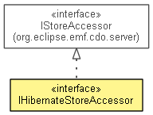

org.eclipse.emf.cdo.server.hibernate
Interface IHibernateStoreAccessor
- All Superinterfaces:
- InternalCDOBranchManager.BranchLoader, InternalCDOCommitInfoManager.CommitInfoLoader, IQueryHandlerProvider, IStoreAccessor, IStoreAccessor.Raw
- public interface IHibernateStoreAccessor
- extends IStoreAccessor.Raw

The Hibernate store accessor works with Hibernate Session instances
to persist changes in the database, it obtains the Session from the
IHibernateStore.
- No Implement
- This interface is not intended to be implemented by clients.
- No Extend
- This interface is not intended to be extended by clients.
| Methods inherited from interface org.eclipse.emf.cdo.server.IStoreAccessor |
commit, getSession, getTransaction, handleLobs, handleRevisions, isReader, loadLob, loadPackageUnit, queryLobs, queryResources, queryXRefs, readChangeSet, readPackageUnits, readResourceID, readRevision, readRevisionByVersion, release, rollback, write, writePackageUnits |
getStore
IHibernateStore getStore()
- Description copied from interface:
IStoreAccessor
- Returns the store this accessor is associated with.
- Specified by:
getStore in interface IStoreAccessor
createChunkReader
IHibernateStoreChunkReader createChunkReader(InternalCDORevision revision,
EStructuralFeature feature)
- Specified by:
createChunkReader in interface IStoreAccessor
- Since:
- 2.0
getHibernateSession
org.hibernate.Session getHibernateSession()
Copyright (c) 2011, 2012 Eike Stepper (Berlin, Germany) and others.